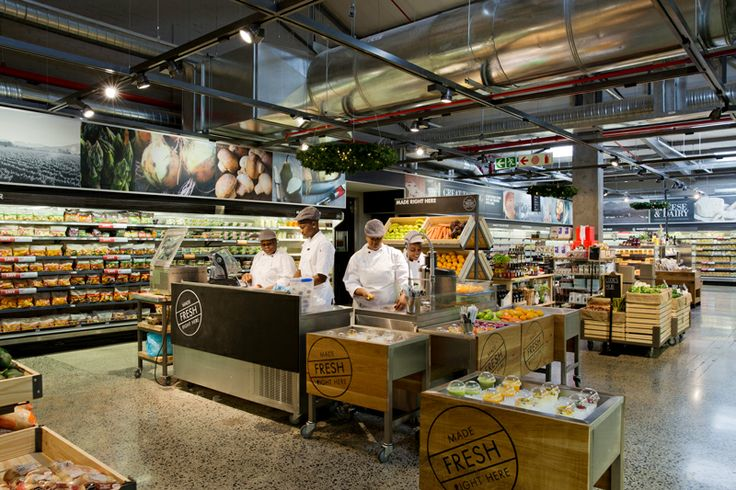
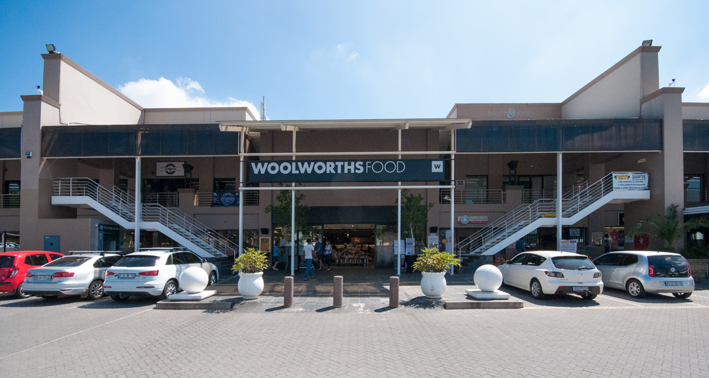

Woolworths Holdings Limited is a South Africa-based multinational retail company that owns the South African retail chain Woolworths, and Australian retailers David Jones and Country Road Group. Woolworths, however, has no association to Australia's Woolworths supermarket chain. The South African Woolworths business consists of full-line fashion, home and beauty stores, many of which incorporate a premium food retail offering. Stand-alone food stores and "Food Stops" attached to Engen petrol stations are also located in urban areas. Woolworths operates 218 full line stores and 430 food stand alone stores in South Africa, with 64 stores throughout the rest of Africa. Woolworths sells clothing and accessory items under a number of premium brands, namely Studio W, RE: and Edition, with the Group’s Australian brands Country Road, Witchery and Trenery also represented. The Group's Australian-based specialty apparel and homewares retail subsidiary Country Road Group operates 557 stores (and a further 242 concession locations within David Jones), The Group operates under separate brands Country Road, Witchery, Trenery, Mimco and Politix.
  Back